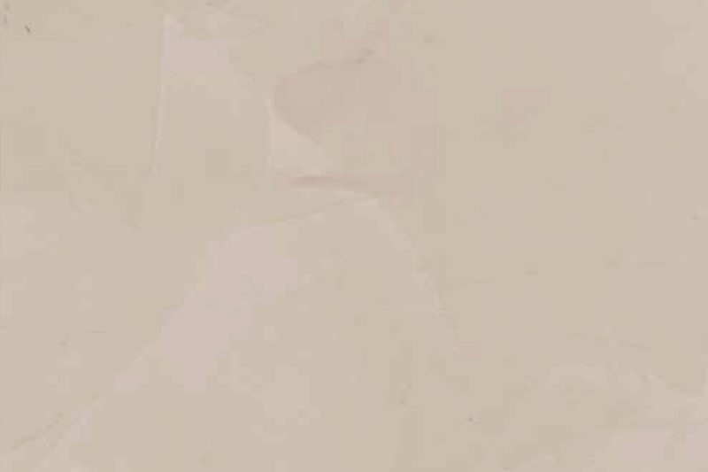

AETHON House · Paphos
AETHON
house of light
A sanctuary built around sunsets, silence, and the western sea.
A private seafront residence on the western coast of Paphos.
The place
First line, where the coast turns west.
AETHON stands on the western shore of Paphos — the lighthouse coast — near Faros Beach, along the axis of the Tombs of the Kings, alongside the archaeological landscape of Nea Paphos, never within it.
Because the coast here faces west, the defining hour is the evening. The light arrives low and long across the water and settles into the stone; garden and terrace are laid out to hold that hour, framing the horizon where the sun meets the sea.
The shore is named for its old lighthouse — the faros. AETHON — Αἴθων, “the shining one” — answers it: not the beacon itself, but the last warm light of the western day. The house lives on that light, too — sustained by the western sun, and quietly self-sufficient.
The architecture
Reduction, not decoration.
AETHON is a quiet elevation of an existing seafront residence — once one of the Faros Beach Houses — not a reinvention. The original geometry is kept and honoured; the material and spatial language is refined toward stillness. Completed in 2026, it is the same house, quietly raised.
The emptiness of Japandi and the warmth of Mediterranean light — held in proportion rather than ornament. Light here is treated as a material in its own right: warm, indirect, and dimmed low as the day turns, so the house changes character with the hour. Warmth, air and shade are tuned quietly and out of sight; comfort here is felt rather than managed.
The plan was shaped from the outset by Feng Shui, so its calm is structural rather than styled. The ground opens to gather — and opens completely: the glazed walls slide back until the living and entertaining rooms, the pool, the garden and the sea become a single space. The garden answers in kind, drawn into the heart of the plan as a planted courtyard — running through the house as much as around it. Above, the rooms grow still. Surfaces stay few and honest — chosen to age with the coast rather than to decorate.
The intent is permanence — an architecture that feels as though it had always belonged to this stretch of coast. Much of the house was made for it: kitchen, cabinetry and joinery shaped for these rooms rather than bought to fit — built, not furnished.
The plan
Gather below, withdraw above.
Two conceptual views — kept soft, for atmosphere rather than measurement.
Below, the house gathers: living, dining, kitchen and a room kept for the evening open in a single line to the terrace, the pool and the garden, and the sea beyond. Above, it withdraws — the bedrooms and quiet rooms kept for rest, growing stiller as the house rises.


The garden
A dry garden, turned to the sea.
The grounds are a Mediterranean dry garden built around ancient olive trees, brought in fully grown — slim cypress totems, grasses that move with the wind, and aromatic rosemary, lentisc and santolina, set among natural rock and sea-worn pebble.
A dry riverbed runs through it and a fire-pit gathers the evening; between house and garden lies the pool — a sheet of water some ten metres long, laid against the house and mirroring the western sky, with a shallow sun-shelf at one end in a sheltered, greener pocket of the garden. Shade sails and quiet retractable awnings temper the midday sun, so the terraces live through the whole day and fold open to the evening. Everything is chosen to ask for little and to age well, kept quiet and turned toward the sea.
After dark the composition keeps its light — a single old olive lit from below, the pool glowing softly at its edges — the same warm hour the house is built around.
The interior
Above, the house withdraws.
Where the ground opens to gather, the floor above withdraws. The rooms grow quieter as the house rises — kept for rest and retreat, and for the slow end of the day. They are made for restoration rather than display: calm, low-lit, and finished in materials that live easily by the sea.
When the light finally goes, warmth takes its place — a low fire, the slow heat of water, the rooms turned down to a glow. Lit softly from within, the house keeps its own evening: warm, unhurried, still.
The material language
The palette is drawn from this coast.
Nothing is chosen for its own sake. The colours are gathered from the place — the light of the sea, the sandstone of the cliffs, the green of the coastal herbs, the brown of the inland woods. The house answers each in material.
The sea, and its light
The white of water, the pale of morning.


The cliffs and the shore
Sandstone, quarried and weathered.


The coastal herbs
Rosemary, lentisc, santolina — the garden’s green, carried inside.


The inland woods
Brown, in shadow and grain.


Views
The house, toward the evening.
A curated selection, forthcoming — sized and sequenced as the photography will sit.
Register interest
A short, private list.
The residence is privately owned and not on the market today — this is not a listing. Should that ever change, a short and private list is kept, for those who would like to be told first. No newsletters, no marketing — only a quiet word, in time.
Your details are used only to contact you about the house, and are shared only with the service that delivers this form. See our privacy notice.
That didn’t go through. Please try again in a moment.
Thank you. Your interest has been noted.
We’ll be in touch only in time, and only should the house become available.
In brief
The house, plainly.
- Location
- Faros coast, Paphos, Cyprus
- Type
- Private residence — a renovation, not a new build
- Built
- 2018
- Renewed
- 2026
The minds behind the house
- Original architecture
- Vardastudio — Andreas Vardas
- Renovation
- G. Patsalides Construction & Renovation — Georgios Patsalides
- Interior
- House Talks Interiors — Vicky Savva
- Landscape
- Antoine Garden Design & Construction — Antoine Hadjialexandrou
- Lighting
- DARK Architectural Lighting
- Feng Shui
- Dear Modern — Cliff Tan